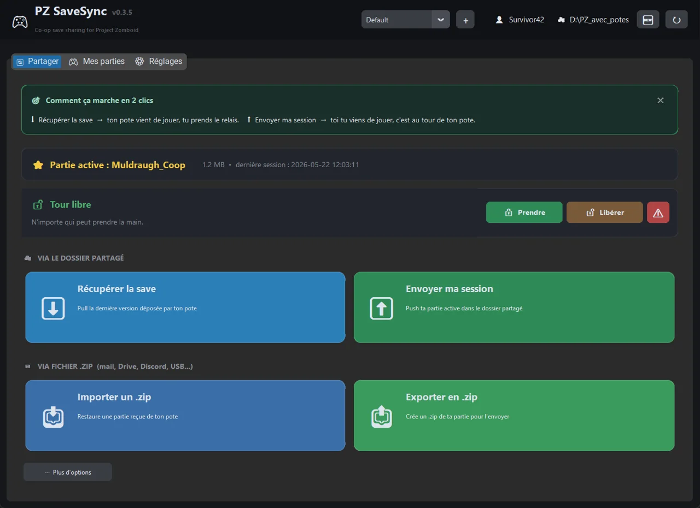
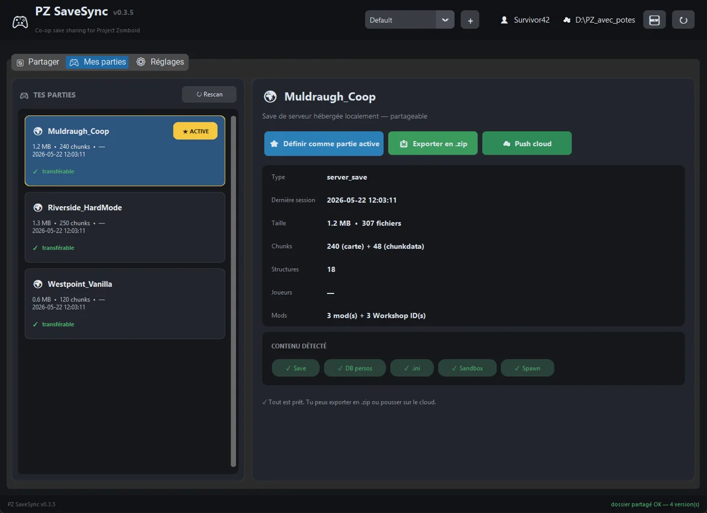
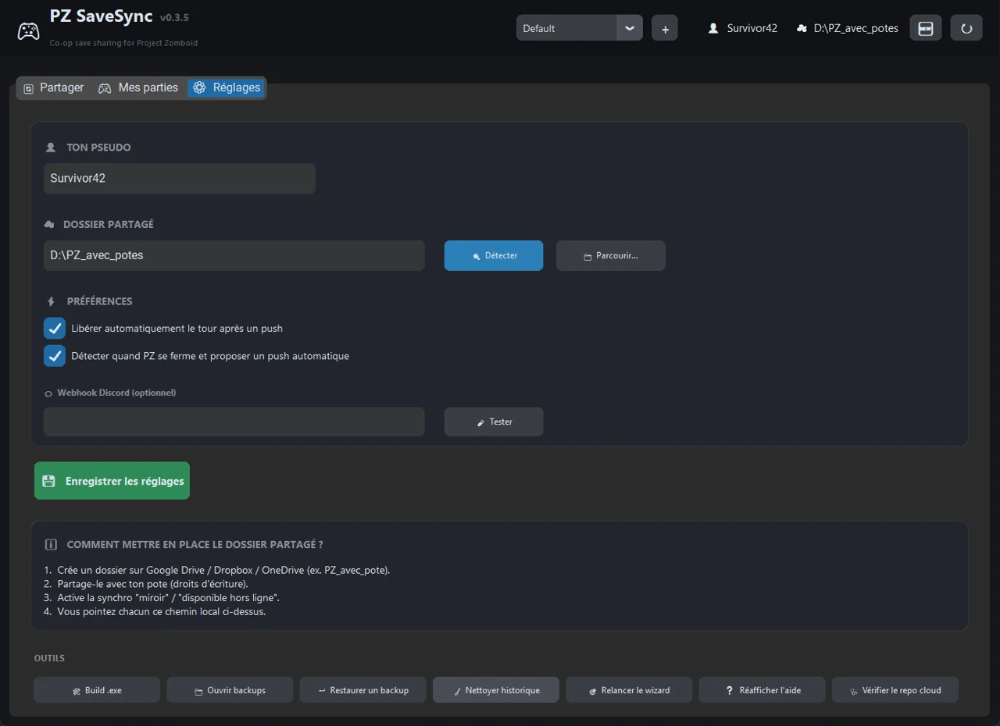

Une petite appli qui synchronise la sauvegarde d'une partie coop via Dropbox, Drive, OneDrive ou zip, avec un verrou de tour pour éviter les conflits. Gratuite, sans compte.



Fonctionne avec les deux builds de Project Zomboid.
Choisis le dossier de partage que tu veux.
Un seul joueur à la fois : fini les saves écrasées.
Aucun compte requis.